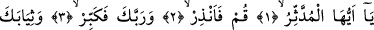
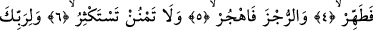
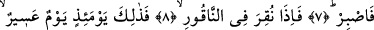
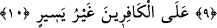

SÂDECE RABBINI
BÜYÜK TANI
Bismillâhirrahmânirrahîm
1. Ey bürünüp sarınan (Rasûlüm)!
2. Kalk ve (insanları) uyar.
3. Sâdece Rabbini büyük tanı.
4. Elbiseni tertemiz tut.
5. Kötü şeyleri terket.
6. Yaptığın iyiliği çok görerek başa kakma.
7. Rabbinin rızasına ermek için sabret.
8. O Sûr’a üfürüldüğü zaman var ya,
9. İşte o gün zorlu bir gündür.
10. Kâfirler için (hiç de) kolay değildir.
“Ey bürünüp sarınan (Rasûlüm!)” “Bürünüp, sarınan” diye tercüme edilen
“müddessir” kelimesinin aslı, “mütedessir’dir. Arapçada “mütedessir” iç çamaşırı/şiar
üzerine giyilen elbiseyi/disarı giyen kişi anlamınadır. “Şiar” ve “disar” şu hadis-i
şerifte geçmektedir: “Ensar şiar/iç çamaşırı diğer insanlar disar onun üstüne giyilen
elbise gibidirler” Bu âyet-i kerîmede velâyetin -insanın iç dünyasıyla ilgili olması
açısından- “şiar/iç çamaşırı” gibi, peygamberliğin ise -dış dünya ile ilgili olması
bakımından- “disar/dış elbise” gibi olduğuna işâret edilmektedir. Bu nedenle,
Peygamber (s.a.) Efendimiz’e insanları uyarı “inzar” makamında -dış elbise anlamını da
içeren- de-se-re kökünden türemiş olan “müddessir” kelimesi ile hitâb olunmuştur.
Cabir (r.a.)’dan rivâyet edildiğine göre Peygamber (s.a.) Efendimiz kendisine vahyin
geldiği ilk anları şöyle aktarmaktadır: “Ben Hira Nur dağında idim. Bana: “Ey
Muhammed sen Allah’ın rasûlüsün!” diye seslenildi. Sağıma soluma baktım hiçbir
şey göremedim. Üzerime baktığımda bir de ne göreyim! Seslenen melek gökle yer
arasındaki bir tahta oturmuş duruyor. Korktum ve Hatice’nin yanına döndüm. Beni